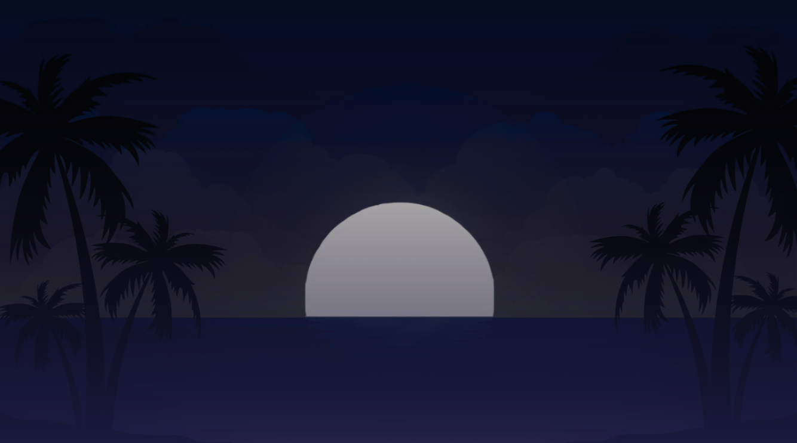
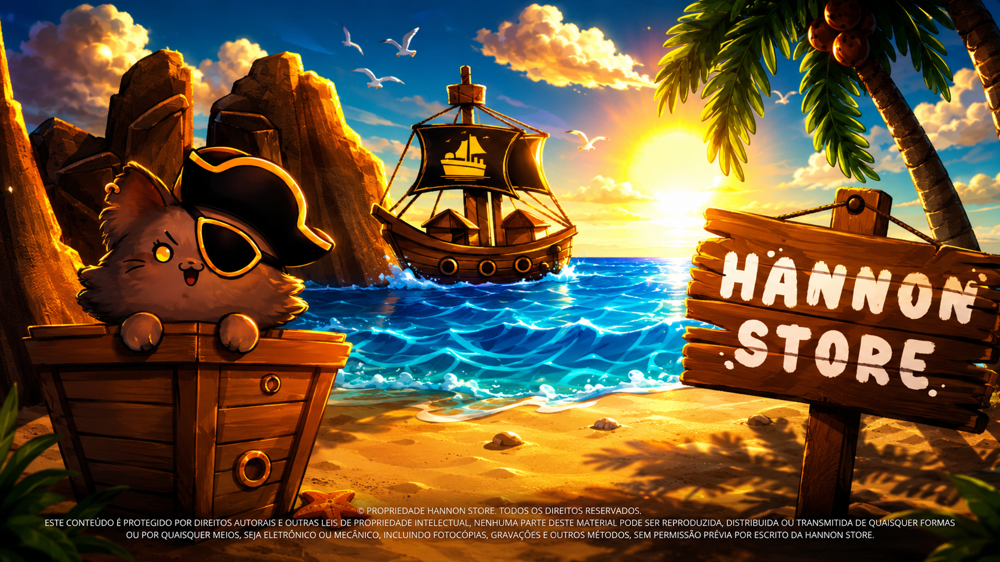
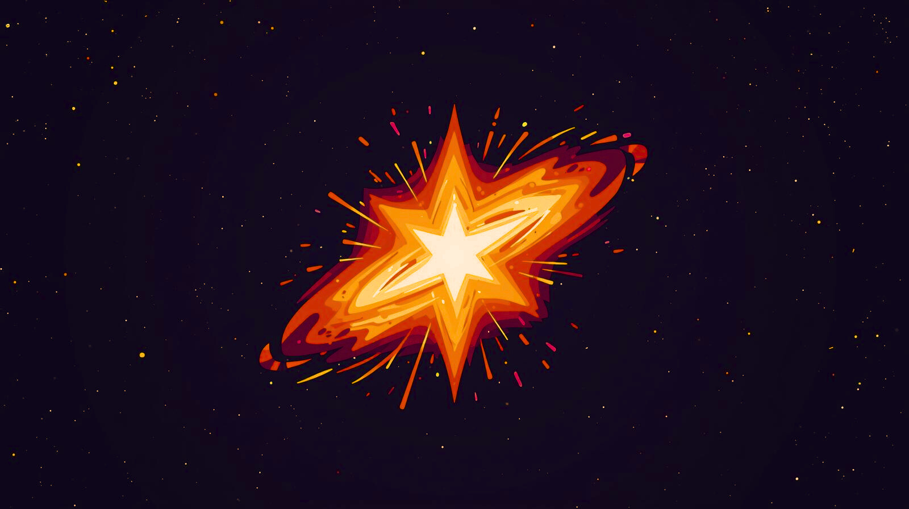
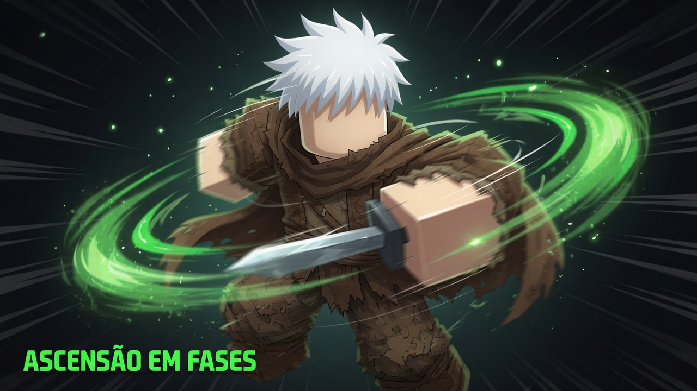
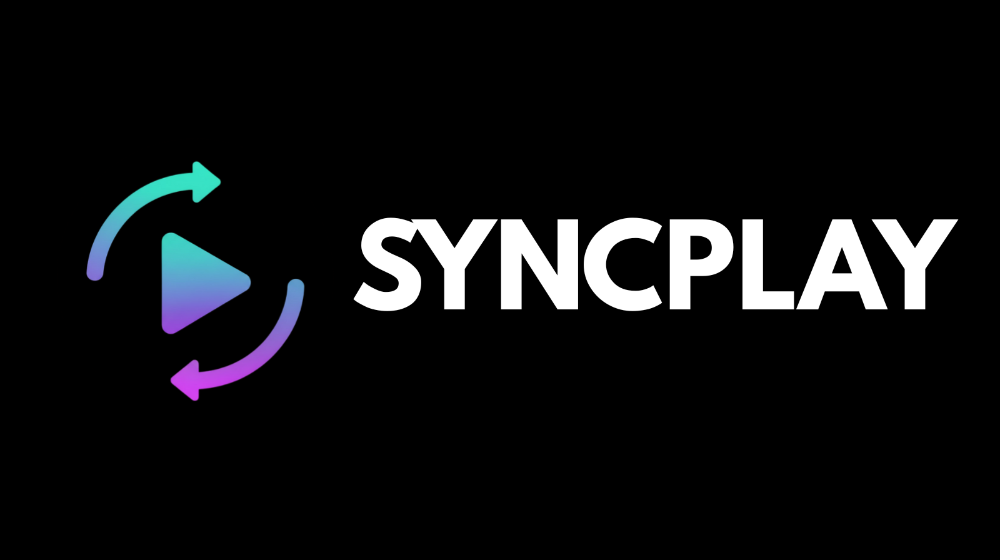
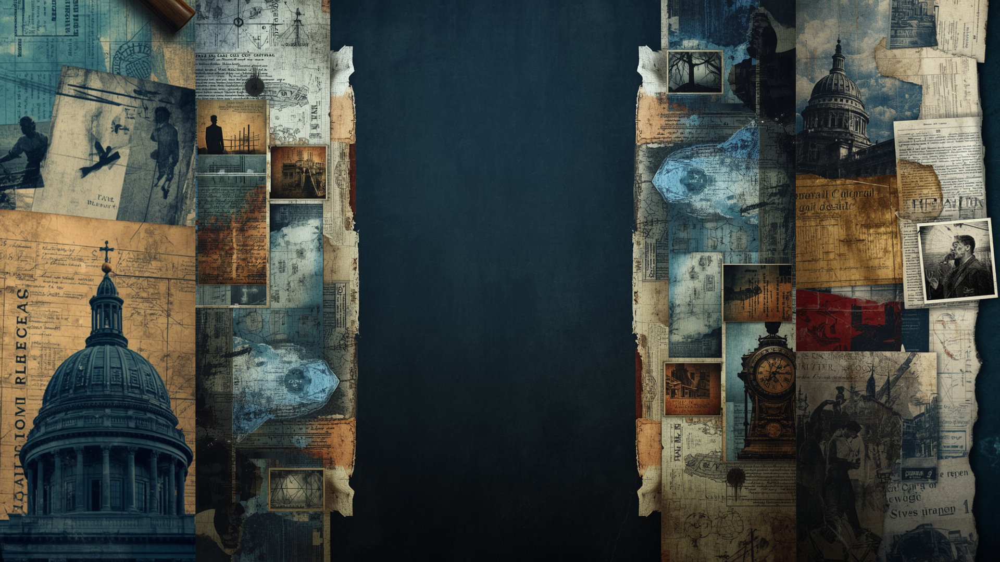

01
12 JUL 2021
Criado
Singularity
O primeiro projeto desta jornada: uma comunidade gamer para reunir jogadores de Brawlhalla, Minecraft e outros jogos.
Conhecer Singularity →A Wigner reúne tudo que eu criei desde 2021, o que está crescendo agora e os próximos universos que pretendo publicar.
Esta linha do tempo segue a ordem real de criação e os lançamentos planejados para a central Wigner.
O primeiro projeto desta jornada: uma comunidade gamer para reunir jogadores de Brawlhalla, Minecraft e outros jogos.
Conhecer Singularity →A loja digital nasceu para reunir Steam Keys, jogos e outros produtos digitais em uma experiência simples.
Conhecer Hannon Store →Uma organização esports com lines, treinos, desafios competitivos, progressão e recrutamento.
Conhecer Exility →A central é criada e publicada para conectar todos os meus projetos, organizar sua história e apresentar os próximos lançamentos.
Publicação planejada da plataforma de investimentos, com metas, ciclos e acompanhamento visual.
Ver projeto Luar →Publicação planejada da plataforma de jogos com catálogo da Steam e preço único de R$ 20 por jogo.
Conhecer SyncPlay →Um anime focado em revelar e explicar a lore de Ascensão em Fases, seus personagens, conflitos, raças e mistérios.
Cada projeto possui identidade própria, mas todos fazem parte da mesma jornada.

01Comunidade gamer de Brawlhalla, Minecraft, eventos, parcerias e amizades.

02
03Organização esports com lines de Brawlhalla e Fortnite, desafios, treinos e recrutamento.

04Western RPG com classes, raças, níveis e uma lore que será expandida pelo anime WIZ.

06
07Próximo anime da Wigner, criado para contar e explicar a lore de Ascensão em Fases.